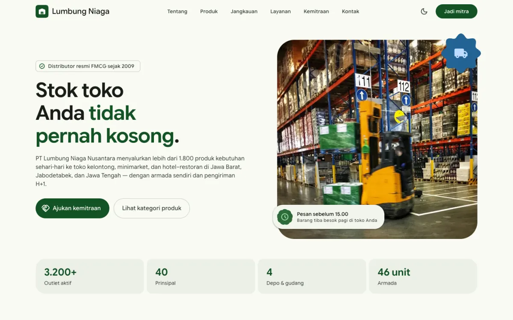
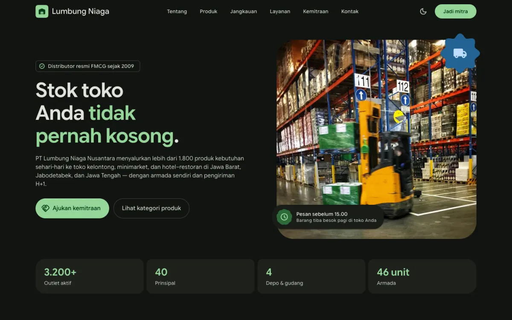
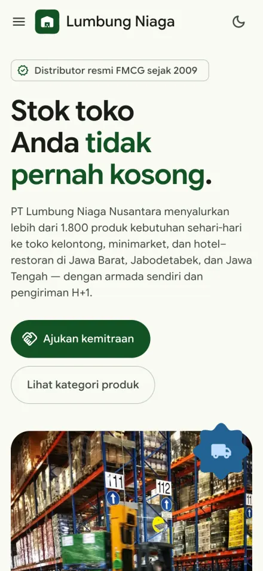
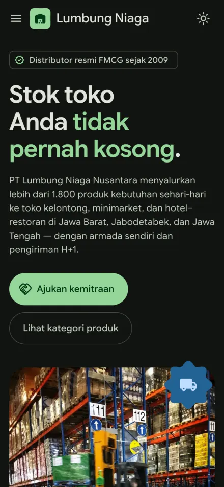

PT Lumbung Niaga Nusantara
Company profile untuk distributor FMCG
Profil distributor dengan katalog lini produk, informasi empat depo, dan formulir kemitraan untuk toko maupun prinsipal. Setelah formulir terkirim, calon mitra langsung menerima nomor tiket — jadi mereka tahu pesannya sampai.
- Fitur
- Filter lini produk, info depo, formulir kemitraan, mode gelap
- Warna dasar
#2E6B3Ahijau gudang



